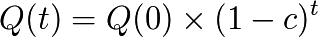

Zooms sur l’histoire de la monnaie
Dans ce chapitre, des périodes monétaires historiques et consécutives sont analysées du point de vue relatif de la TRM, Il ne s’agit nullement d’un point de vue « absolu ».
Les monnaies néolithiques, premières monnaies denses à inflation incontrôlable
Dès le néolithique on retrouve des équivalents de comptabilisation des échanges par du troc matériel basé sur des valeurs de référence diverses. On a retrouvé ainsi par exemple en Bretagne, dans les tumulus constitués à ces époques, des stocks importants de haches en jade, dont le nombre et la dissémination font forcément penser à des stocks monétaires, permettant des échanges sur la base d’une valeur de référence.
On avait déjà avec ce type de comptabilité la possibilité d’une inflation monétaire par ceux qui avaient accès aux stocks de cette valeur de référence, ceci expliquant sans doute que des stocks aussi importants soient parvenus jusqu’à nous.

Haches en Jade du néolithique (Wikimedia)
Les monnaies métalliques, premières monnaies limitant l’inflation
Le troc étant insuffisant pour permettre les échanges, et les premières monnaies basées sur des productions potentiellement fortement inflationnistes, parce que facilement productibles par tout un chacun, il est devenu nécessaire d’utiliser une monnaie de valeur plus stable. Et pour cela les métaux rares allaient avantageusement prendre la place monétaire centrale.
C’est ainsi que l’or, l’argent, le bronze et le cuivre vont être utilisés comme valeur de référence quasi exclusive lors des développements des empires de l’antiquité, et ce jusqu’au XVIIIème siècle et le fort développement des monnaies fiduciaires.
Empire Romain
Pas d’empire sans expansion monétaire ! L’universalité d’usage de la monnaie donne à celui qui en contrôle la production et la définition un formidable pouvoir d’accaparation illégitime quand le respect de l’éthique vis-à-vis de l’émission n’est pas au cœur des valeurs fondamentales.
L’expansion de l’Empire Romain s’accompagne d’expansion monétaire régulièrement « dévaluée » au profit d’un émetteur central : Rome.

Solidus, 327 ap JC (Wikimedia)
Denier, Sesterce, Aureus, Antoninien, Valérien, Argenteus, Solidus, se succèdent. Composés de bronze, cuivre, argent et or en fonction des conquêtes par la force, et de leurs butins, ou via l’esclavage dans des zones aurifères, comme la célèbre région de « Las Medulas » en Espagne, où selon les récits de Pline l’Ancien on peut estimer qu’entre 26 av. JC et et le IIIe siècle les Romains ont extrait environ 1 500 tonnes d’or.
Chacune de ces monnaies est émise à l’occasion d’une expansion de l’Empire, et de l’appropriation de ressources métalliques, remplaçant l’ancienne, puis est lentement dévaluée par l’émetteur central qui met de moins en moins de métal précieux dans ses pièces, n’ayant évidemment pas accès à des ressources infinies.

Région aurifère de Las Medulas exploitée par Rome du Ier au IIIe siècle ap JC (Wikimedia)
Le solidus, basé sur une quantité d’or fixe n’est pas abandonné par perte de valeur, mais par rareté. Ce n’est pas sa valeur qui lui fait perdre son statut de monnaie (il a toujours de la valeur aujourd’hui !), mais son universalité comme intermédiaire d’échange qui ne peut pas être assurée.
Déjà on peut commencer à réfléchir au fait que bien que l’unité monétaire se « dévalue » par rapport à la matière de référence qu’elle est censée représenter lors de sa première émission dans le temps, cela n’empêche en rien l’expansion économique et la quantité globale que l’ensemble de la masse monétaire peut échanger et qui elle augmente dans le temps. Il n’y a pas de contradiction entre la contraction unitaire de la monnaie son expansion globale qui accompagne l’évolution économique.
On peut résumer cela par le fait que 1 est bien plus petit par rapport à 1 000 que par rapport à 100, tandis que 1 000 est bien plus grand que 100. Si notre unité monétaire perd ainsi 10 % de sa capacité d’échange vis à vis d’une valeur donnée mais que la masse monétaire elle gagne globalement 15 % de capacité d’échange parce que l’expansion économique accompagne sa transformation, alors ce qui est « perdu » unitairement est « gagné » globalement. Il restera à savoir d’où vient le surplus constaté.

Sesterce de trajan 105 ap JC (Wikimedia)
La bulle Espagnole d’or et d’argent
Malgré leur nature limitée a priori, l’or et l’argent n’ont pas échappé à l’inflation notamment lors de la période de l’Empire Espagnol (à partir du XVème siècle). La découverte des Amériques par Christophe Colomb (1492) va bouleverser les flux monétaires en Europe.
Ainsi d’après Wikipédia dans « Relations économiques entre l’Amérique Espagnole et l’Europe » :
« Les deux grandes prises de guerre faites dans l’Empire aztèque et surtout dans l’Empire Inca rapportèrent d’importantes sommes d’argent à la couronne d’Espagne et aux conquistadores. La rançon de l’empereur inca Atahualpa représente selon Pierre Chaunu un demi-siècle de production de métaux précieux en Europe.
Les mines rapporteront encore plus que les butins de guerre : d’abord par les quelques sources d’or à Cuba au début du XVIe siècle, puis les très grandes mines d’argent du Pérou du XVIIe siècle (la mine du Potosi) et plus au Nord les mines mexicaines qui vont dominer la production du XVIIIe siècle en compagnie des mines d’or du Brésil portugais (Minas Gerais).
C’est au cours des XVIIe et XVIIIe siècle que la production et l’arrivage de métaux précieux en Europe ont été les plus importants. »
Or que constatons-nous ? Les métaux précieux perdent de la valeur au fil des siècles : si on s’inspire de l’historien Earl Hamilton sur l’Histoire des prix, le stock de 600 millions de pesos en 1 500 permet de faire autant d’achat de blé que le stock de 3 milliards en 1800.
L’ajout de monnaie dans l’économie fait baisser la valeur de la monnaie. Ce qui est vrai pour un gain de productivité d’un produit quelconque (la baisse de sa valeur monétaire à monnaie constante) est vrai aussi pour la monnaie quand bien même il s’agit d’un bien de référence : la quantité de marchandise qu’on peut acheter avec une quantité donnée de monnaie, dépend de la quantité de monnaie totale en circulation. Ce n’est donc pas l’un ou l’autre, c’est les deux. L’augmentation de la productivité de la production de blé aurait dû en faire baisser le prix en monnaie courante, ici en or ou argent métal au fil des 3 siècles. Toutefois l’ajout constant d’une quantité importante de monnaie qui s’est diffusée dans l’économie (estimée ici selon Hamilton à cinq fois plus), en aurait fait monter le prix d’un facteur 5 à production et consommation constante.

Le conquistador Francisco Pizarro (Wikimedia)
En supposant une stabilité relative de la production des biens et des services entre ces deux dates, on serait en droit de prétendre que le coût de la production de blé a baissé d’un facteur 5 tandis que l’injection de 5 fois plus de monnaie en a donc stabilisé le prix facial.

Inflation d’or et d’argent suite à la conquête Espagnole (Luc Fievet TRM 2.0)
Ce raccourci ne tient pas compte des changements de comportement économique, de l’augmentation du nombre d’individus (qui réduit la part de monnaie / personne) des nouveaux biens et services demandant leur part de flux monétaire etc... Mais permet de bien comprendre le mécanisme à l’œuvre dans la monnaie : le prix local dépend fortement de la variation monétaire globale, ainsi que de sa densité de répartition. La densité se comprend ainsi : si le surplus de monnaie était resté aux Amériques, le prix du blé en Europe, selon le même raisonnement, aurait probablement chuté d’un facteur 5 grâce essentiellement aux gains de productivité réalisés, et toutes choses égales par ailleurs..
Cette remarque historique permet de comprendre que non seulement l’or et l’argent n’échappent pas aux règles monétaires relatives fondamentales, mais qu’il n’est nullement besoin d’y avoir recours pour gérer une masse monétaire commune. Ce n’est donc pas la nature d’un bien déterminé qui en fait une monnaie, mais l’acceptation de tout mode d’échange circulaire y compris purement mathématique. Comment cette monnaie sera-t-elle alors gérée ? C’est la confiance dans l’éthique de l’outil d’échange qui assurera l’adhésion des Citoyens à la monnaie proposée.

Reales en argent (Wikimedia)
L’effondrement à éviter : thésaurisation et déflation
Étant donné son rôle monétaire grandissant l’or et l’argent métal allaient pousser à la recherche et au contrôle des gisements, ainsi qu’à la thésaurisation. En prêtant des monnaies limitées à un taux d’intérêt fixe, l’ensemble des prêteurs engagent l’ensemble des emprunteurs à rendre plus que ce qui existe en circulation, dans un mouvement global de thésaurisation. La nature limitée de ce type de monnaie rend mécaniquement impossible ce genre de mouvements de fonds sur le long terme.
Il faut bien comprendre que le phénomène de prêt est déjà en soi un phénomène de thésaurisation, le prêteur entend obtenir plus de monnaie qu’il n’en possède, et il ne s’agit pas à ce moment-là du rôle de la monnaie en tant que moyen immédiat d’échange universel des biens et des service. Ce n’est pas un problème tant que le prêt et la thésaurisation reste limité, mais que se passe-t-il si la monnaie est excessivement thésaurisée ou que les fuites ne sont pas progressivement renflouées, comme il faut rajouter de l’énergie dans un système isolé pour qu’il poursuive son mouvement ?
Nous avons un phénomène de dissipation de la monnaie. Non seulement la thésaurisation crée un cycle déflationniste si la création de monnaie n’en compense pas la perte, mais l’idée selon laquelle l’épargne est bonne parce qu’elle présuppose un investissement ultérieur est insuffisante à expliquer ou à endiguer le mécanisme pour deux raisons :
- Si l’épargne constituée est réinjectée sous forme de prêts à intérêts, le cycle déflationniste subit une contre-tendance temporaire, et l’épargne constituée, si les emprunteurs continuent de rembourser correctement augmente, augmentant le taux de déflation jusqu’à des niveaux de baisse des prix si insupportables qu’on atteint la faillite du circuit d’échange. Le prêteur qui a un avantage monétaire initial, et s’amuse à ne plus injecter de monnaie que sous forme de prêts à intérêts, et non plus en circulation de biens, prend mécaniquement possession de tout le circuit économique.
- Si l’épargne constituée va s’investir dans un autre circuit autonome d’échanges (dans l’espace ou dans le temps), cela est très bon pour ce nouveau circuit sans aucun doute, mais ne règle en rien le problème du circuit initial, qui n’a pas forcément ni l’objectif ni la capacité de vendre sa production à l’extérieur, par exemple là où aurait été investie cette monnaie. Là encore on perçoit toute la finesse d’analyse permise par le champ de valeur, qui élimine les incongruités des théories globales en mettant l’accent sur la densité de la monnaie et le champ de valeur différentiel.
Or ce mécanisme déflationniste local est d’autant plus marqué dans une monnaie à valeur de référence rare qui, par construction, non seulement n’est pas dense partout, mais dont la croissance dépend de paramètres externes et d’investissements spécifiques pour la produire, qui n’ont que peu de rapport avec ce que souhaitent produire et échanger des producteurs libres quant à la mesure de toute valeur.
La monnaie en croissance faible mais dense encourage l’investissement et joue alors son rôle fondamental : l’utilisation de la monnaie pour les échanges au sein des circuits de production. Par ailleurs elle permet de rétablir progressivement la densité monétaire partout, en réparant lentement mais progressivement et sans à-coups, les fuites inévitables via les excès de thésaurisation ou les investissements extérieurs à la zone économique concernée.

Un exemple de thésaurisation et d’investissement avec fuite (Luc Fievet TRM 2.0)
Enfin, un parallèle avec la physique n’est pas sans intérêt. On sait depuis les théories énergétiques que le mouvement perpétuel est impossible. Le mouvement perpétuel consiste en un système qui tournerait de lui-même, avec un apport d’énergie initial fini. Or ces systèmes violent les premiers et deuxième principes de la thermodynamique. En clair il y a toujours dissipation d’énergie, et il faut toujours d’une façon ou d’une autre injecter une énergie supplémentaire pour maintenir un système en mouvement.
Pour l’anecdote, Albert Einstein a déclaré que lorsqu’il travaillait sur sa Théorie de la Relativité Restreinte (de 1902 à 1905), et qu’il était employé à l’office des brevets de Berne, il trouvait ce travail « commode ». En effet, outre qu’il lui permettait la subsistance nécessaire à la poursuite de ses recherches scientifiques, ce travail lui prenait peu d’énergie, et consistait souvent à déclarer comme irrecevables des brevets qui prétendaient établir des machines à mouvements perpétuels.
Penser qu’une quantité de monnaie fixe serait un gage de la stabilité de la « valeur » de cette monnaie, c’est ne pas comprendre la Relativité de la mesure individuelle de la valeur, et ne pas tenir compte non plus du simple fait expérimental, qui démontre tout le long de l’histoire de la monnaie depuis 10 000 ans, que d’une façon forcée ou consciemment acceptée l’expansion des masses monétaires est inévitable. En comprenant ce phénomène on transformera les changements cycliques de rattrapage brutalement vécus, souvent sources de guerres ou de révolutions, en simples périodes d’ajustements, acceptables parce que bien compris par tous, assis sur une éthique systémique clairement établie, difficilement contestable, et surtout assurant toujours les libertés économiques.
John Locke 1632 - 1704

John Locke (wikimedia)
John Locke, philosophe précurseur des lumières met des limites et tempère le droit de propriété par la « clause lockéenne » qui déclare que l’on ne peut s’approprier légitimement les ressources originelles sans qu’il en reste suffisamment et en assez bonne qualité pour autrui.
Les monnaies fiduciaires, premières monnaies expansionnistes

Caricature du système de Law (Wikimedia)
Au XVIIIème siècle le « système de law » du nom de l’écossais « Jonh Law » est officiellement mis en place au sein d’une proto-banque centrale en France. Law avait observé les mécanismes monétaires fiduciaires déjà à l’œuvre en Italie. La France d’alors croule sous les dettes, et Louis XV donne le feu vert pour la mise en place du système.
La monnaie fiduciaire commence à faire évoluer la monnaie vers une perte de contact avec la valeur de référence, pour aller vers la dématérialisation sous la forme de confiance pure. Ici dans cette première mouture le papier monnaie représente une part de valeur de référence (or ou argent) payable par la Banque émettrice.
Premières Pyramides fiduciaires à création centralisée
Les premières Banques émettrices de monnaie fiduciaire basent la confiance sur la valeur de référence. Mais grande est la tentation d’émettre plus de billets que la Banque ne possède de métal en gage, permettant à de plus en plus d’acteurs de monétiser leurs productions, et de créer ainsi des cycles d’échanges de valeur. Le développement économique s’accélère au fur et à mesure que la monnaie devient dense dans l’économie.
Toutefois deux causes fondamentales créent l’effondrement de ces pyramides expansionnistes.
Tout d’abord on ne peut indéfiniment prétendre gager de façon fixe une valeur de référence finie en émettant de plus en plus monnaie. Il faudrait pour cela annoncer clairement que le taux de croissance de la monnaie émise par la Banque, permettrait de récupérer un taux inverse de valeur de référence dans le temps. Si par exemple on émet des billets sur une vitesse de « c » gageant une valeur de référence possédée par l’émetteur, et qu’on annonce sur le billet qu’au moment de l’émission, le billet est échangeable contre une quantité de la valeur de référence, alors le billet devrait noter qu’au temps « t » la valeur de référence échangeable sera de :

Par exemple pour une croissance annoncée des billets émis de 5 % / an, il faudrait alors noter sur les billet émis à la date « d » que la quantité de valeur de référence gagée par ce billet pour l’année « a » en cours est de :

La quantité de la valeur de référence échangeable diminuerait alors de moitié dans ce cas précis tous les 15 ans après la date d’émission d’un billet. Ce système serait complexe, et demanderait de faire le calcul de la valeur de référence pour chaque billet en fonction de sa date d’émission, mais il serait exact.
La deuxième cause est la perte de confiance dans le gage fixé . Les billets existants étant gagés sur une valeur fixe, avec une très grande confiance des utilisateurs, le gage n’est quasiment jamais réclamé par les bénéficiaires. Le Banquier se sent alors pousser des ailes, et émet un peu plus de monnaie, puis encore plus, jusqu’au jour où la confiance chute.
Les acteurs de l’économie s’étonnent de trouver autant de gages de la valeur de référence dans leurs échanges, faisant ainsi monter les prix dans la monnaie fiduciaire ainsi émise, et jusqu’au jour où la confiance en l’émetteur n’existe plus du tout, ce qui constitue la rupture et la crise. En demandant leur gage, les bénéficiaires découvrent la vérité : il n’y a pas dans les coffres de la Banque la valeur de référence en quantité égale à la somme des gages émis, les clients sont floués, et c’est la faillite.
C’est le principe même de la pyramide de Ponzi qui est décrit ici où ce sont les derniers entrants qui sont le plus durement touchés. Cela est dû au fait qu’une expansion économique ne peut pas se faire sur le gage d’une valeur de référence fixe. Ce phénomène qui semble pourtant évident mettra trois siècles à trouver une amélioration partielle, au fur et à mesure que la monnaie fiduciaire va prendre place dans l’économie en tant que telle, et non plus en tant que gage.
Le phénomène de la pyramide de Ponzi qui consiste à faire payer les derniers entrants pour rémunérer les premiers équivaut dans le miroir monétaire de la valeur à spolier les biens ou faire travailler les derniers entrants au bénéfice des émetteurs centraux de monnaie.
Thomas Paine 1737 – 1809
Thomas Paine, révolutionnaire Américain, puis Français, déclare dans « les droits de l’Homme » publiés en 1792 l’assertion suivante :
“Ceux qui ont quitté ce monde et ceux qui n’existent pas encore sont à la plus grande distance les uns des autres que l’imagination humaine puisse concevoir : quelle possibilité d’obligation peut-il donc y avoir entre eux ? Quelle règle ou quel principe peut-on poser pour que deux êtres imaginaires dont l’un a cessé d’être et l’autre n’existe pas encore, et qui ne peuvent jamais se rencontrer dans ce monde, l’un soit autorisé à maîtriser l’autre jusqu’à la consommation des siècles ?”
En 1795 trois ans après « les droits de l’Homme » Thomas Paine, alors député Français, publie « Agrarian Justice » dans lequel il déclare qu’il ne peut y avoir de citoyens sans revenu et que chaque citoyen devant être représenté, il doit bénéficier d’un revenu universel de base lui permettant son existence politique.

Thomas Paine (wikimedia)
Invention du Levier Bancaire réglementé
Malgré les échecs répétés des premières Banques Centrales, l’idée de la monnaie fiduciaire expansionniste n’a pas été abandonnée. Pourquoi ? Parce qu’une telle monnaie se transporte mieux, s’échange plus facilement, est un fameux business modèle pour les Banques émettrices, mais surtout a visiblement conduit l’économie à des phases expansionnistes rapides. Il fallait trouver un système qui évite les faillites, tout en gardant les côtés positifs du système.
On a donc trouvé une parade : le levier bancaire limité. Le Banquier s’est vu octroyer une limite à son émission de monnaie fiduciaire dans la limite d’un ratio réglementé. Ce système permettait de redonner aux clients la valeur de référence dans une proportion suffisamment importante, pour ne pas briser la confiance. C’est historiquement le facteur de 10 % de réserves environ qui a été retenu. Avec ce taux de réserve, un nombre suffisant de clients pouvaient récupérer leur valeur de référence, et la confiance restait valable dans le système... Uniquement pendant un temps plus long !
Ce système toujours asymétrique n’empêche en rien la perte de confiance, et ne fait qu’en repousser l’échéance sur une plus longue période. L’effet de levier limité se retrouve bloqué lors de l’atteinte du « haut de bilan » lorsque les 10 % de réserves sont atteints, le système Bancaire se voit contraint de ne plus émettre de nouveaux crédits, et c’est la faillite des derniers emprunteurs, ne voyant plus venir l’afflux de nouvelle monnaie permettant de payer dettes + intérêts.
La valeur de référence garantie par la monnaie ne peut pas être respecté par l’émetteur qui veut allouer plus de crédits pour accompagner une expansion économique. Mais par ailleurs sans expansion monétaire, il n’est tout simplement pas possible d’accompagner l’investissement, la thésaurisation sans création de valeur associée, suffisant à acquérir un pouvoir d’achat en augmentation. La valeur intrinsèquement fondante d’une monnaie expansionniste encourage sa circulation, permet de payer dettes + intérêts : elle est la condition nécessaire d’une expansion souple dans le temps.
En jouant sur ces deux aspects complémentaires que sont l’expansion et la contraction de crédits, le système centralisé à effet de levier, donne aux Banques la maîtrise de « cycles économiques » artificiels, qui ne sont que des cycles monétaires, leur permettant non seulement de contrôler l’économie dans son ensemble, mais aussi de s’assurer quelle que soit la valeur créée par ailleurs, une rente perpétuelle. C’est un fait : les émetteurs de monnaie asymétrique sont parmi les centres d’activités économiques les plus anciens avec les États, qui traversent sans broncher les « crises » successives.
Les producteurs éloignés du centre d’émission monétaire, ne comprenant pas comment la monnaie est émise, ne se rendent compte que tardivement des effets des politiques d’émission de crédits sur la fluctuation de la valeur de la monnaie commune et ne mesurent que trop tard l’impact de ce phénomène sur leur propre activité.
Quand ils s’en rendent compte, et souhaitent tous en même temps récupérer la « valeur de référence » il n’y a pas autant de stocks pour répondre à toutes les demandes (assurer 10 % de réserve reste dans tous les cas une escroquerie, il est impossible à l’ensemble des détenteurs de monnaie de récupérer cette « valeur », et les premiers à se servir le sont au détriment des autres avant la faillite générale), et les faillites des Banques s’enchaînant, déstabilisent ensuite tout le reste de l’économie qui s’effondre et conduit à des désordres sociaux et politiques d’envergure historique. 1929 était la dernière crise de taille internationale basée sur une valeur de référence fixe.

Charles Ponzi, inventeur de la pyramide du même nom (Wikimedia)
Clifford Hugh Douglas 1879 – 1952
Clifford Hugh Douglas, ingénieur Britannique publie en 1924 « social credit » où pour la première fois on voit l’approche d’un « dividende monétaire » qui est démontrée comme essentielle pour assurer l’équilibre de la monnaie et la correction du biais des intérêts liés aux dettes.

Clifford Hugh Douglas (wikimedia)
L’instabilité de la valeur de référence
De 1946 à 1971 l’étalon-or continue d’être utilisé, mais en étant plus vraiment garanti par l’émetteur autrement qu’en prix de façade. Tant que la demande pour la valeur de référence était faible, le prix pouvait être affiché comme fixe, mais avant même 1971, des évolutions du prix affiché devenaient nécessaires devant une demande excessive soutenue par l’expansion monétaire comme le montre ce graphique du prix en dollar de « l’étalon » qui n’en était déjà plus vraiment un.

Evolution du prix de l’or en $ jusqu’en 1971
C’est ainsi que dès 1967 le prix de l’or commence à lâcher prise. L’impossibilité de fournir la valeur de référence à prix fixe au sein d’une monnaie en expansion se fait jour quand à demande égale la quantité de monnaie augmente. C’est un phénomène purement mécanique.
De la même façon constater en 2010 une croissance de 7 % / an sur 10 ans de la masse monétaire en euro, et entendre que la « politique monétaire » est de maintenir une « inflation à 2 % » est si aberrant qu’il ne faudra pas s’étonner de voir venir tôt ou tard un rattrapage violent, soit par à coups sur les valeurs les plus demandées, soit de façon progressive, mais il est mécaniquement impossible sur le long terme de faire cohabiter deux chiffres totalement contradictoires.
Abandon complet de l’étalon or, les réserves fractionnaires
Actant l’inutilité et l’impossibilité de tenir un étalon via une valeur de référence, 1971 voit l’apparition des réserves fractionnaires, un système de contrôle de la masse monétaire par les Banques Centrales, qui permet de contrôler les taux d’intérêts et la quantité de crédits alloués par les Banques. Le prix de l’or a alors subi des variations diverses, passant par une bulle historique qui a vu un sommet en 1980.
Le système des réserves fractionnaires ne résout toujours pas le problème de l’éthique quant à la monnaie, un centre d’émission à deux têtes, Banques et États, s’en arrogeant un monopole d’émission exclusif au détriment des producteurs éloignés du centre.
Il y a toujours dans ce système un effet de levier profitant à l’émetteur asymétrique de monnaie qui crée de la monnaie par du crédit arbitraire « gagé », en cas de faillite de l’emprunteur, par un taux de par exemple 8 % de réserve... en cas de faillite de l’emprunteu, par un taux de par exemple 8 % de réserve... constituée de … la même monnaie ! Ce changement est une manne pour le secteur financier, puisque ce type de réserve étant manipulable aisément, on peut toujours, dans les cas de crises, trouver des solutions, qui quoique éthiquement très discutables peuvent éviter les faillites brutales, et donc évitent une part des désordres antérieurs.
On peut comparer le système monétaire encore actif en 2010 à l’ancien réseau informatique Français du Minitel, un réseau centralisé, où la création de services nécessitait un avis du propriétaire monopolistique ainsi que le partage des revenus de l’activité. Tandis qu’un système d’émission de monnaie symétrique dans l’espace-temps tel que le Dividende Universel est comparables à un internet neutre où chaque citoyen de la zone économique est considéré comme égal devant la création monétaire, et donc susceptible d’échanger en « peer to peer », de personne à personne, sans permission spéciale d’une autorité centrale.
Comment marche ce système de réserves fractionnaires du point de vue de l’économie ? Ce système crée des cycles artificiels, au bénéfice des émetteurs asymétriques :
Étape 1 : le système financier se consolide, et sur la base de ses “fonds propres” va pouvoir émettre de la dette « € » à intérêts qui vient “irriguer l’économie” par un “effet de levier”. Étape qui peut être longue et s’étaler sur 10 ou 20 ans, la Banque Centrale assurant un contrôle de cette « spoliation réglementaire », à un taux suffisamment faible pour être supportable.
Étape 2 : le système financier “se paye” par l’intérêt « I » de la dette ainsi émise (publique et privée). Les intérêts, et éventuellement le nominal des dettes, alimentent le “trou” ainsi constitué. Sauf que la dette émise n’a aucune raison de “revenir” à l’émetteur, puisque ayant dûment payé ceci ou cela, elle se trouve en très grande partie thésaurisée par des épargnants, ou se retrouve circulante au sein de micro-systèmes autonomes qui s’en servent à juste titre de moyen d’échange. Cette étape peut elle aussi durer de 10 à 20 ans...
Étape 3 : du fait de l’impossibilité de retour de la dette émise avec les intérêts, le système financier, sur la base des faillites ainsi provoquées, se retrouve avec un bilan totalement instable, et en situation de faillite lui-même (il est quand même censé équilibrer son bilan). Il s’effondre sur lui-même. Il y a alors une émission massive de nouvelle dette “en vue de se refaire”, pour irriguer de nouveau une économie qui s’éloigne (inflation de la richesse réelle), mais qui manque cruellement de monnaie (crise dû à la rareté artificiellement maintenue de la monnaie). On se retrouve alors en fin de cycle, et un nouveau cycle peut redémarrer, 1) 2) puis 3), sauf que l’espace économique considéré est bien plus grand et plus « riche » que lors du cycle précédent (en valeur monétisée, ce qui ne signifie aucunement une valeur « absolue », qui n’existe pas).
Le résultat pour les producteurs, est que, quelle que soit la valeur créée et échangée, le fait d’accepter une telle monnaie « commune » est l’assurance que cette valeur sera vampirisée inéluctablement par l’émetteur asymétrique, lui assurant un « business modèle » absolu et infaillible, valable en tout point de l’espace-temps.
Trois étapes d’émission de l’« argent dette » (Luc Fievet TRM 2.0)
Yoland Bresson, né en 1942
Dans « l’après salariat » publié en 1984 l’économiste Français Yoland Bresson déclare :
« Il faut que la collectivité, par le biais de l’État, alloue périodiquement à tout citoyen économique, sans autre considération que celle de son existence, l’équivalent monétaire de la valeur de l’unité de temps ».
Yoland Bresson démontre un lien entre temps d’existence et valeur et calcule sur des considérations liées au PIB une valeur relative d’un revenu de base (qu’il nomme revenu d’existence) dont la quantité est étonnamment proche de celle déduite par l’approche purement monétaire et relativiste de la TRM.
2010 et après : Bâle III, ou des monnaies symétriques ?
Le cycle étant long, la captation de valeur se faisant sur un rythme suffisamment faible pour ne pas être excessif, le processus est difficilement discernable. De la même façon qui est capable de voir la différence entre la construction d’un réseau centré type Minitel face à un réseau acentré symétrique et neutre type Internet à part les spécialistes des réseaux informatiques et des protocoles de télécommunication ?
Nous sommes donc bien dans l’exploitation de l’ignorance quant à la construction du réseau monétaire. Un citoyen informé d’une proposition d’utilisation d’une monnaie commune lui permettant d’échanger de façon équitable sa production avec ses semblables présents et à venir, ne devrait pas accepter une telle architecture, mais opter pour un choix qui soit ouvert, transparent, et équitable entre tous les membres de la zone monétaire concernée.
2007 – 2010 représente la fin du dernier cycle d’expansion monétaire 1971 – 2010, qui a vu successivement des règles privées s’imposer tant aux États-Unis qu’en Europe décidées au sein d’un groupement « d’experts », nommées « Bâle I » puis « Bâle II » et « Bâle III » en cours de négociation, censées « réguler les Banques ».
Cela reviendrait à essayer de transformer le Minitel alors qu’internet s’impose.
Or que se passe-t-il en 2010 ? Une explosion des monnaies complémentaires jamais vue dans l’histoire des crises monétaires. Si les SEL explosent, qui tentent plusieurs types de systèmes monétaires, à Crédit Mutuel fixe, à Dividende Universel, c’est surtout sur internet que se déploient des tentatives intéressantes, dont la plus aboutie techniquement est sans doute le projet Open Source « BitCoin » qui propose de gérer un système monétaire P2P « peer to peer », où la monnaie peut se développer de façon totalement décentralisée, via les liens de personne à personne et où l’ensemble des transactions est stocké sur l’ensemble du réseau dans un mode chiffré.
Le projet BitCoin est cependant plombé par une non compatibilité fondamentale avec la TRM. En effet la masse totale des Bitcoins est techniquement limitée à un maximum. Ce qui fait que bien que la symétrie spatiale est en partie respectée parce qu’elle n’avantage personne à priori, la symétrie temporelle ne l’est pas, et une fois passée la génération de la masse monétaire maximum, les derniers entrants n’y auront plus accès.
De plus il y a tout de même un biais spatial. La symétrie n’est pas basée sur les individus adoptant le système, mais sur la capacité machine à générer du calcul informatique. Ceci n’est pas conforme aux libertés économique. Bitcoin ne respecte donc que la première liberté d’un système monétaire, s’agissant d’un système ouvert.
On peut s’attendre donc à ce que la « pyramide temporelle des Bitcoins » s’effondre tôt ou tard.
Que reste-t-il des ruées vers l’or à part des villes fantômes ? Tandis qu’après une récolte, un champ de blé ne fournit-il pas encore et toujours des récoltes abondantes ?

{kind=link}
{kind=link}
Le Dividende Universel en application
Le Dividende Universel a déjà été mis en pratique récemment sous différentes formes, et différents noms comme « revenu d’existence », « revenu permanent », « allocation universelle » etc...
On trouve des exemples de mise en œuvre en Alaska, dans une expérience locale en Namibie, au sein de SEL comme le SCEC en Italie, ou encore au Brésil. Il existe des groupements qui font la promotion d’un revenu individuel symétrique comme l’association internationale du BIEN (Basic Income Exchange Network), ainsi que l’AIRE (Association pour l’Instauration d’un Revenu d’Existence) en France qui fut présidée par l’économiste Yoland Bresson.
Mais mieux encore, l’Europe est déjà quasiment installée dans un système où un Dividende Universel se développe depuis 20 ans en parallèle avec un système de crédits arbitraires. En France en 2010 le RSA est de 450 € / mois mais diminue au fur et à mesure que l’on gagne des revenus supplémentaires, sur un large fossé, de sorte que par exemple, parmi les citoyens ayant un revenu horaire égal, certains touchant le RSA ne travaillent qu’à mi-temps, quand les autres font un plein temps. Un système totalement inéquitable, que l’on peut appeler « grand fossé » et qui a pour conséquence essentielle d’inciter les citoyens ayant peu de revenus, soit à ne pas monétiser leurs productions, soit à ne pas déclarer les échanges (ou les deux).
C’est en fait l’ensemble des pays de l’OCDE qui propose un revenu minimum, qui reste dans la majorité des cas conditionnel, le plus souvent associé à une condition d’âge, de contraintes diverses comme celle de démontrer la recherche d’un « emploi », et qui donc in fine ne considèrent pas les individus comme les associés inconditionnels de la nation.
Le problème essentiel de la zone Euro est la forte disparité du revenu minimum. Là où la France, l’Allemagne et l’Espagne proposent peu ou prou un montant comparable de 450 € / mois, les citoyens des autres pays récemment associés à la monnaie commune n’en ont pas, et ont parfois des salaires minimum inférieurs à ce montant.

Evolution en France en 2011, du revenu net perçu (zones bleue + orange = RSA + complément net. Les zones jaune, vert et rouge sont les taxes) en fonction du chiffre d’affaire individuel total ou salaire complet (abscisses = salaire complet). Entre 600 € et 2200 € / mois de CA, le Citoyen gagne toujours la même chose, environ 1050 € / mois. (http://www.creationmonetaire.info « Le revenu de base en France »)
Dans ces conditions la production quitte les pays à haut revenu minimum pour aller vers ceux où il est bien plus bas voire inexistant, créant une forte distorsion de concurrence entre individus, en totale contradiction avec l’objectif affiché d’un marché libre et non faussé.
Une monnaie commune n’est compatible avec les Droits de l’Homme que si son mode de création respecte l’égalité des Hommes devant le jugement de toute valeur, et donc leur droit égal devant la création monétaire. L’instauration d’une zone économique à monnaie commune sans convergence des revenus minimums individuels est une violation du Droit. Il s’agit de l’instauration d’une monnaie ne respectant pas les quatre libertés (Liberté de la modification démocratique du code, et les trois libertés économiques que sont l’accès aux ressources, la production, et l’échange « dans la monnaie »).
Le projet libre Open-UDC
Le projet Open-UDC (pour « Universal Dividend Currency ») est un projet de développement d’un système informatique libre (sous licence GPL), de monnaie libre à Dividende Universel.
Initié en 2011 il est accessible sur http://www.open-udc.org , et consiste à développer un ensemble d’outils permettant la gestion individuelle et collective d’échanges monétaires au sein d’une masse monétaire numérique associée à des règles et processus de contrôle ouverts et démocratiques.
Outre une base démocratique initiale, le projet a réduit le calcul du Dividende Universel sur une base mensuelle à partir de règles très simples, qu’il peut être utile de rappeler ici pour les créateurs de SEL voulant s’inspirer de la TRM :
- UD (0) = 100 UDC
- UD (n+1) = MAX { UD(n) ; Pud × M(n)/N(n) }
Où « n » est le mois précédent. UD(n) est le Dividende Universel du dernier mois, Pud est le pourcentage constant de Dividende Universel minimal prédéfini, M(n) est la masse monétaire du mois précédent, et N(n) le nombre de membres de la communauté monétaire.
Le Dividende Universel en unités monétaire et donc fixe, ne baisse jamais, et est remonté si la croissance de la masse monétaire par membre (M(n)/N(n)) devient inférieure au minimum « Pud ».